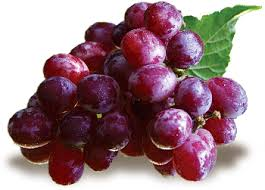

Organic Apple (Red Delicious)
Price: ₹180
Quantity: 1 Kg
Description:
Crisp, sweet, and naturally juicy, our organic Red Delicious
apples are grown without synthetic pesticides
or wax coatings. Packed with antioxidants and
fiber, they're perfect for snacking, baking, or
juicing. Enjoy a bite of pure, farm-fresh goodness.
Organic Orange (Sweet Lime)
Price: ₹120
Quantity: 1 Kg
Description:
Bursting with vitamin C and natural
sweetness, our organically grown oranges are harvested at
peak ripeness. With their refreshing taste and juicy segments, they
make a perfect addition to your breakfast or fresh juice routine.
Organic Banana (Cavendish)
Price: ₹60
Quantity: 1 dozon (approx. 12 pieces)
Description:
Naturally ripened and free from artificial chemicals, our Cavendish bananas
are soft, sweet, and rich in potassium. Ideal for energy snacks, smoothies, or
kid's lunchboxes. Sustainably grown for a healthier planet and healthier you.
Organic Grapes (Black Seedless)
Price: ₹200
Quantity: 1 Kg
Description:
Our organic black seedless grapes are sweet, plump, and loaded with antioxidants.
Perfect for fresh snacking, salads, or desserts. Grown without harmful chemicals and
carefully packed to preserve freshness and flavor.

Organic Mango (Alphonso - Seasonal)
Price: ₹110
Quantity: 1 Kg
Description:
Experience the king of fruits in its purest form. Our organic Alphonso mangoes
are naturally ripened, fiberless, and bursting with rich, aromatic sweetness.
Sourced directly from certified organic orchards during peak season.